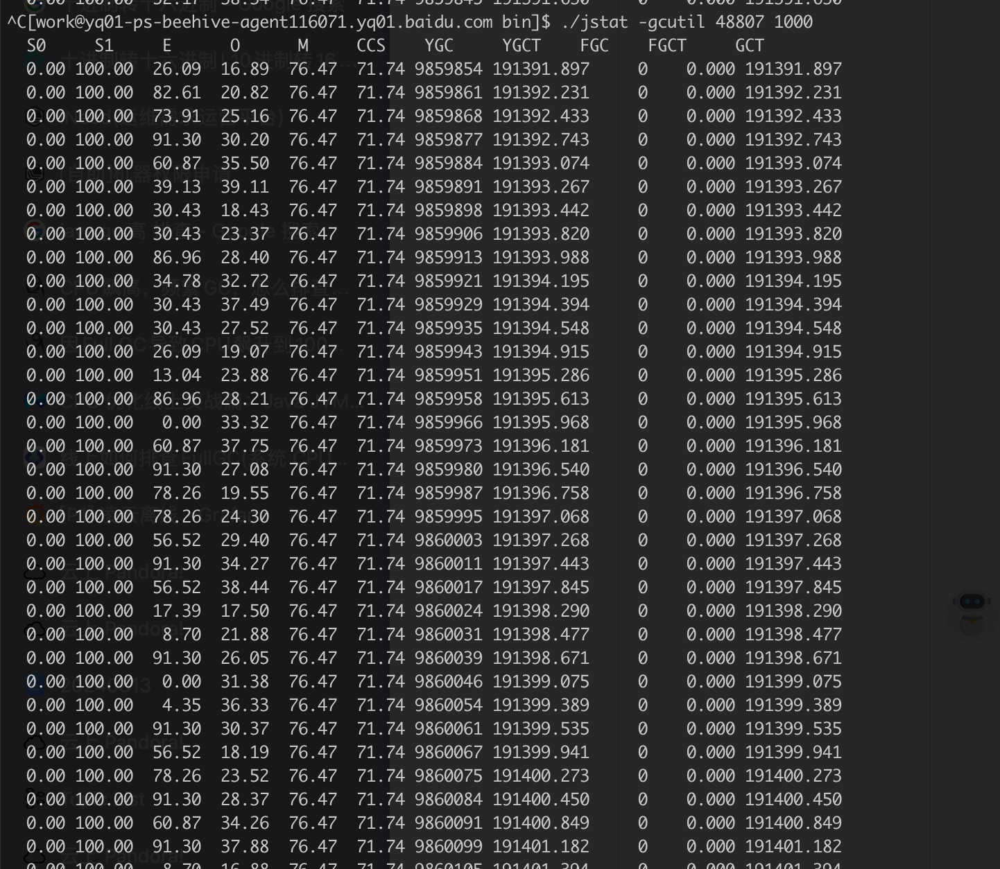

需要一些计算机网络的基础知识以及 GPT …
背景
本周（2024/08/12）开始陆续出现 kafka build 集群监控采集超时的问题。从监控上可以看出，和其他实例相比，有一个实例的 CPU 使用量很高（12 vs 4 / 核），并且 GC 的时间特别长（25% vs 2%），并且即使这个问题实例 A 做了迁移，实例 B 又接着出问题，每次一个实例。初步可以判断，大概率是由外部请求导致的问题。


JVM 排查
在网上搜了一下 jvm gc 时间长 & CPU 占用严重的问题思路排查，主要是使用 jstack 和 jstat 。前者主要是配合 ps 命令查看哪个调用栈占用的 CPU 资源比较多，后者是用来看 JVM gc 的指标。首先执行如下命令获取到 java 进程各个线程的 CPU 使用。
1 | ps -L -o pid,tid,pcpu,comm -p <pid> | tail -n +2 | sort -k3 -r -n |
然后再执行如下命令 dump 出当前的 JVM stack 信息。
1 | jstack <pid> > stack.txt |
将 ps 中各个线程 id 转为十六进制后，在 stack.txt 中找对应的调用栈，栈信息里的 ndi 就是对应的线程 id，样例如下
1 | "kafka-request-handler-0" #125 daemon prio=5 os_prio=0 tid=0x00007f896da76800 nid=0x1095f runnable [0x00007f86ef8f8000] |
异常实例的 kafka-request-handler-x 的 CPU 使用量相较于两个正常实例是较高的，这也证实了可能存在异常请求。再执行 jstat 看一下 JVM gc 的指标
1 | ./jstat -gcutil <pid> 1000 # 1s 刷一次 |
输出结果如下图所示，异常实例的 O 相较其它两个实例一直都很小。


gpt 的解释如下:
在 JVM 中，新创建的对象首先被分配到 Eden 区。当 Eden 区满时，会触发 Minor GC，清理掉那些已经死亡的对象，而那些仍然存活的对象会被移动到 Survivor 区（S0或S1）。如果一个对象在 Survivor 区存活了足够长的时间（或者 Survivor 区满了），那么这个对象就会被移动到 Old 区。
因此，如果你看到 Eden 区的使用率高，但 Old 区的使用率低，那么可能的情况是你的应用在创建大量的对象，但这些对象很快就不再被引用，所以在 Minor GC 时就被清理掉了，没有机会被晋升到 Old 区。这可能是一个正常的情况，特别是对于那些处理大量短暂任务（例如 HTTP 请求）的应用。
所以有没有一种可能，有异常服务在频繁地请求 kafka ，并且每次请求的时候都请求到了 BNS 列表中的第一个实例？
网络连接排查
可以通过 netstat -an 获取机器上当前全量的网络连接信息。假设问题 kafka 所在的机器是 10.62.179.33 ，监听端口是 9092，那么可以用如下指令来比较 5s 前后连接到端口 9092 的网络连接的变化
1 | # grep < 的也可以 |
如果客户端和 kafka 建立的是稳定的长连接的话，不应该有很多的 ip 输出，在正常的 kafka 实例所在的机器上执行确实如此，但是在异常的 kafka 实例所在的机器上执行有如下输出。
1 | 1 > 10.109.86.17 |
可以初步判断，10.62.179.28、10.62.179.30、10.62.179.36 和 10.62.179.41 可能存在异常实例。选择一个实例登录后，同样执行 netstat 找到连接 kafka 的进程（需要有 work 权限）
1 | netstat -anp | grep 10.62.179.33:9092 |
可以看到，有大量的 TIME_WAIT 连接，表示可能存在频繁的 TCP 的 create 和 close。

定位问题进程的方法也很简单，先执行一遍 netstat 命令，记好每个进程通信使用的端口，过 5s 再执行一次，看下这个端口是否是 TIME_WAIT 状态，如果是的话，那么这个进程就是有问题的。按照这个思路分别在上述几个 ip 上找了一下，最初是定位到了一个应用下的一批实例，怀疑是实例运行环境的问题，做了迁移操作，但是不见缓解。后续又发现了另一个应用下的实例也有问题，所以开始怀疑是否是一批应用存在问题。了解到这两应用都使用的是同一个业务框架，有可能是业务框架的实现存在问题，问相关同事要到了对应的代码库，研究了一下代码，果然发现了问题。
业务框架在将处理结果写 kafka 时，每写一条数据就创建一个 producer ，写完之后就 close 掉，符合线上观察到了 TCP 频繁 create 和 close 现象。联系了负责两个应用的业务方，分别下线了写 kafka 的逻辑和 stop 全量应用实例，之后异常实例就恢复正常了。最后把问题报给了业务框架的维护方。